- 00 开篇词 为什么你要学习etcd_.md.html
- 01 etcd的前世今生：为什么Kubernetes使用etcd？.md.html
- 02 基础架构：etcd一个读请求是如何执行的？.md.html
- 03 基础架构：etcd一个写请求是如何执行的？.md.html
- 04 Raft协议：etcd如何实现高可用、数据强一致的？.md.html
- 05 鉴权：如何保护你的数据安全？.md.html
- 06 租约：如何检测你的客户端存活？.md.html
- 07 MVCC：如何实现多版本并发控制？.md.html
- 08 Watch：如何高效获取数据变化通知？.md.html
- 09 事务：如何安全地实现多key操作？.md.html
- 10 boltdb：如何持久化存储你的key-value数据？.md.html
- 11 压缩：如何回收旧版本数据？.md.html
- 12 一致性：为什么基于Raft实现的etcd还会出现数据不一致？.md.html
- 13 db大小：为什么etcd社区建议db大小不超过8G？.md.html
- 14 延时：为什么你的etcd请求会出现超时？.md.html
- 15 内存：为什么你的etcd内存占用那么高？.md.html
- 16 性能及稳定性（上）：如何优化及扩展etcd性能？.md.html
- 17 性能及稳定性（下）：如何优化及扩展etcd性能_.md.html
- 18 实战：如何基于Raft从0到1构建一个支持多存储引擎分布式KV服务？.md.html
- 19 Kubernetes基础应用：创建一个Pod背后etcd发生了什么？.md.html
- 20 Kubernetes高级应用：如何优化业务场景使etcd能支撑上万节点集群？.md.html
- 21 分布式锁：为什么基于etcd实现分布式锁比Redis锁更安全？.md.html
- 22 配置及服务发现：解析etcd在API Gateway开源项目中应用.md.html
- 23 选型：etcd_ZooKeeper_Consul等我们该如何选择？.md.html
- 24 运维：如何构建高可靠的etcd集群运维体系？.md.html
- 特别放送 成员变更：为什么集群看起来正常，移除节点却会失败呢？.md.html
- 结束语 搞懂etcd，掌握通往分布式存储系统之门的钥匙.md.html
- 捐赠
17 性能及稳定性（下）：如何优化及扩展etcd性能_
你好，我是唐聪。
我们继续来看如何优化及扩展etcd性能。上一节课里我为你重点讲述了如何提升读的性能，今天我将重点为你介绍如何提升写性能和稳定性，以及如何基于etcd gRPC Proxy扩展etcd性能。
当你使用etcd写入大量key-value数据的时候，是否遇到过etcd server返回”etcdserver: too many requests”错误？这个错误是怎么产生的呢？我们又该如何来优化写性能呢？
这节课我将通过写性能分析链路图，为你从上至下分析影响写性能、稳定性的若干因素，并为你总结出若干etcd写性能优化和扩展方法。
性能分析链路
为什么你写入大量key-value数据的时候，会遇到Too Many Request限速错误呢？ 是写流程中的哪些环节出现了瓶颈？
和读请求类似，我为你总结了一个开启鉴权场景的写性能瓶颈及稳定性分析链路图，并在每个核心步骤数字旁边标识了影响性能、稳定性的关键因素。

下面我将按照这个写请求链路分析图，和你深入分析影响etcd写性能的核心因素和最佳优化实践。
db quota
首先是流程一。在etcd v3.4.9版本中，client会通过clientv3库的Round-robin负载均衡算法，从endpoint列表中轮询选择一个endpoint访问，发起gRPC调用。
然后进入流程二。etcd收到gRPC写请求后，首先经过的是Quota模块，它会影响写请求的稳定性，若db大小超过配额就无法写入。
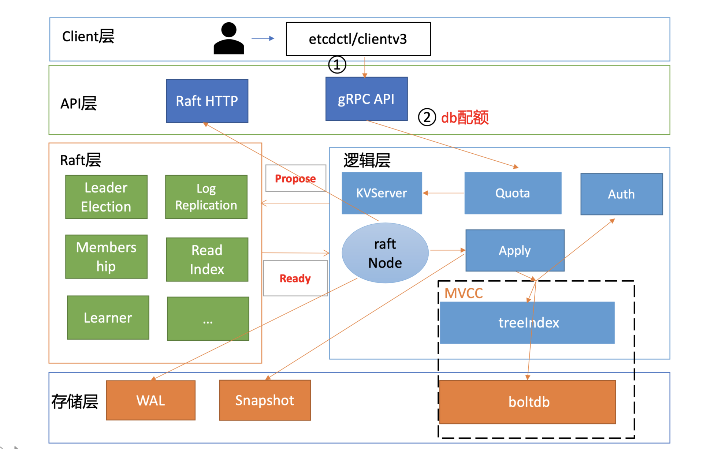
etcd是个小型的元数据存储，默认db quota大小是2G，超过2G就只读无法写入。因此你需要根据你的业务场景，适当调整db quota大小，并配置的合适的压缩策略。
正如我在11里和你介绍的，etcd支持按时间周期性压缩、按版本号压缩两种策略，建议压缩策略不要配置得过于频繁。比如如果按时间周期压缩，一般情况下5分钟以上压缩一次比较合适，因为压缩过程中会加一系列锁和删除boltdb数据，过于频繁的压缩会对性能有一定的影响。
一般情况下db大小尽量不要超过8G，过大的db文件和数据量对集群稳定性各方面都会有一定的影响，详细你可以参考13。
限速
通过流程二的Quota模块后，请求就进入流程三KVServer模块。在KVServer模块里，影响写性能的核心因素是限速。
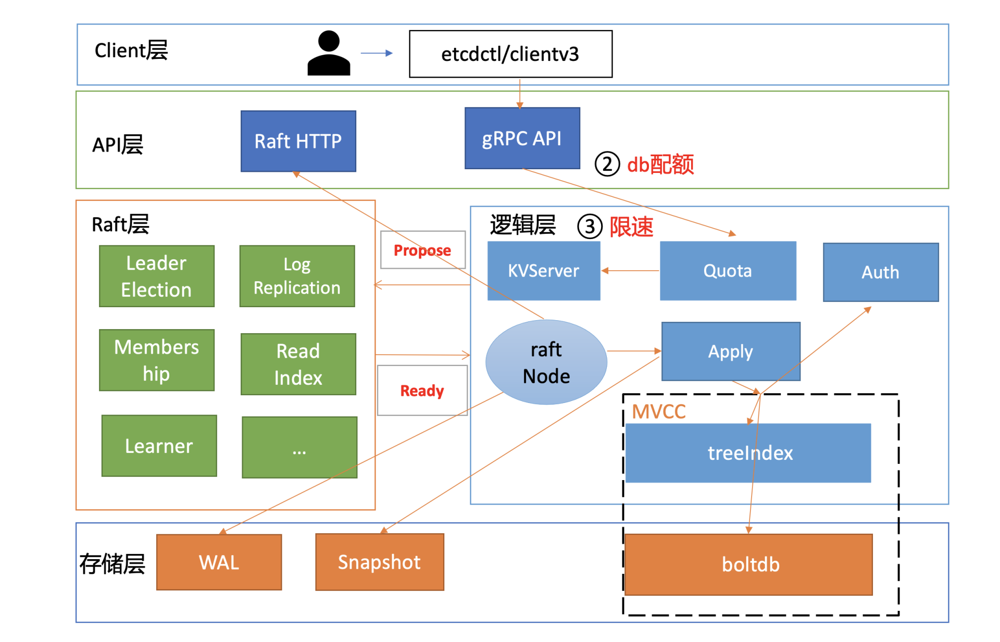
KVServer模块的写请求在提交到Raft模块前，会进行限速判断。如果Raft模块已提交的日志索引（committed index）比已应用到状态机的日志索引（applied index）超过了5000，那么它就返回一个”etcdserver: too many requests”错误给client。
那么哪些情况可能会导致committed Index远大于applied index呢?
首先是long expensive read request导致写阻塞。比如etcd 3.4版本之前长读事务会持有较长时间的buffer读锁，而写事务又需要升级锁更新buffer，因此出现写阻塞乃至超时。最终导致etcd server应用已提交的Raft日志命令到状态机缓慢。堆积过多时，则会触发限速。
其次etcd定时批量将boltdb写事务提交的时候，需要对B+ tree进行重平衡、分裂，并将freelist、dirty page、meta page持久化到磁盘。此过程需要持有boltdb事务锁，若磁盘随机写性能较差、瞬间大量写入，则也容易写阻塞，应用已提交的日志条目缓慢。
最后执行defrag等运维操作时，也会导致写阻塞，它们会持有相关锁，导致写性能下降。
心跳及选举参数优化
写请求经过KVServer模块后，则会提交到流程四的Raft模块。我们知道etcd写请求需要转发给Leader处理，因此影响此模块性能和稳定性的核心因素之一是集群Leader的稳定性。
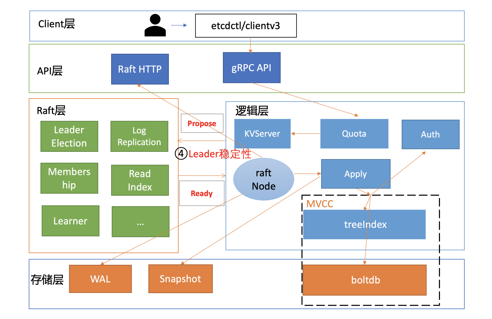
那如何判断Leader的稳定性呢?
答案是日志和metrics。
一方面，在你使用etcd过程中，你很可能见过如下Leader发送心跳超时的警告日志，你可以通过此日志判断集群是否有频繁切换Leader的风险。
另一方面，你可以通过etcd_server_leader_changes_seen_total metrics来观察已发生Leader切换的次数。
21:30:27 etcd3 | {"level":"warn","ts":"2021-02-23T21:30:27.255+0800","caller":"wal/wal.go:782","msg":"slow fdatasync","took":"3.259857956s","expected-duration":"1s"}
21:30:30 etcd3 | {"level":"warn","ts":"2021-02-23T21:30:30.396+0800","caller":"etcdserver/raft.go:390","msg":"leader failed to send out heartbeat on time; took too long, leader is overloaded likely from slow disk","to":"91bc3c398fb3c146","heartbeat-interval":"100ms","expected-duration":"200ms","exceeded-duration":"827.162111ms"}
那么哪些因素会导致此日志产生以及发生Leader切换呢?
首先，我们知道etcd是基于Raft协议实现数据复制和高可用的，各节点会选出一个Leader，然后Leader将写请求同步给各个Follower节点。而Follower节点如何感知Leader异常，发起选举，正是依赖Leader的心跳机制。
在etcd中，Leader节点会根据heartbeart-interval参数（默认100ms）定时向Follower节点发送心跳。如果两次发送心跳间隔超过2*heartbeart-interval，就会打印此警告日志。超过election timeout（默认1000ms），Follower节点就会发起新一轮的Leader选举。
哪些原因会导致心跳超时呢？
一方面可能是你的磁盘IO比较慢。因为etcd从Raft的Ready结构获取到相关待提交日志条目后，它需要将此消息写入到WAL日志中持久化。你可以通过观察etcd_wal_fsync_durations_seconds_bucket指标来确定写WAL日志的延时。若延时较大，你可以使用SSD硬盘解决。
另一方面也可能是CPU使用率过高和网络延时过大导致。CPU使用率较高可能导致发送心跳的goroutine出现饥饿。若etcd集群跨地域部署，节点之间RTT延时大，也可能会导致此问题。
最后我们应该如何调整心跳相关参数，以避免频繁Leader选举呢？
etcd默认心跳间隔是100ms，较小的心跳间隔会导致发送频繁的消息，消耗CPU和网络资源。而较大的心跳间隔，又会导致检测到Leader故障不可用耗时过长，影响业务可用性。一般情况下，为了避免频繁Leader切换，建议你可以根据实际部署环境、业务场景，将心跳间隔时间调整到100ms到400ms左右，选举超时时间要求至少是心跳间隔的10倍。
网络和磁盘IO延时
当集群Leader稳定后，就可以进入Raft日志同步流程。
我们假设收到写请求的节点就是Leader，写请求通过Propose接口提交到Raft模块后，Raft模块会输出一系列消息。
etcd server的raftNode goroutine通过Raft模块的输出接口Ready，获取到待发送给Follower的日志条目追加消息和待持久化的日志条目。
raftNode goroutine首先通过HTTP协议将日志条目追加消息广播给各个Follower节点，也就是流程五。
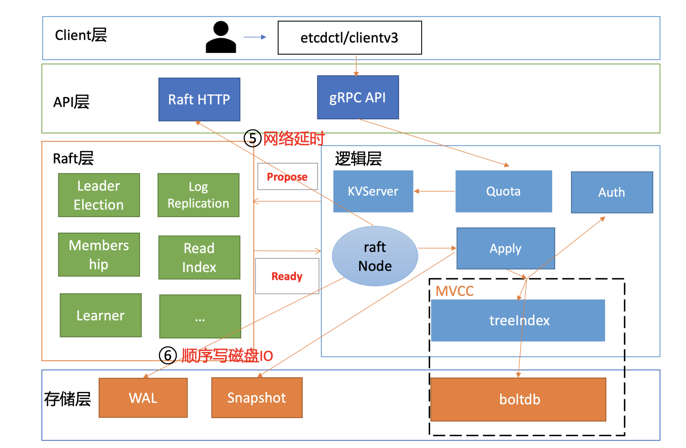
流程五涉及到各个节点之间网络通信，因此节点之间RTT延时对其性能有较大影响。跨可用区、跨地域部署时性能会出现一定程度下降，建议你结合实际网络环境使用benchmark工具测试一下。etcd Raft网络模块在实现上，也会通过流式发送和pipeline等技术优化来降低延时、提高网络性能。
同时，raftNode goroutine也会将待持久化的日志条目追加到WAL中，它可以防止进程crash后数据丢失，也就是流程六。注意此过程需要同步等待数据落地，因此磁盘顺序写性能决定着性能优异。
为了提升写吞吐量，etcd会将一批日志条目批量持久化到磁盘。etcd是个对磁盘IO延时非常敏感的服务，如果服务对性能、稳定性有较大要求，建议你使用SSD盘。
那使用SSD盘的etcd集群和非SSD盘的etcd集群写性能差异有多大呢？
下面是SSD盘集群，执行如下benchmark命令的压测结果，写QPS 51298，平均延时189ms。
benchmark --endpoints=addr --conns=100 --clients=1000 \
put --key-size=8 --sequential-keys --total=10000000 --
val-size=256
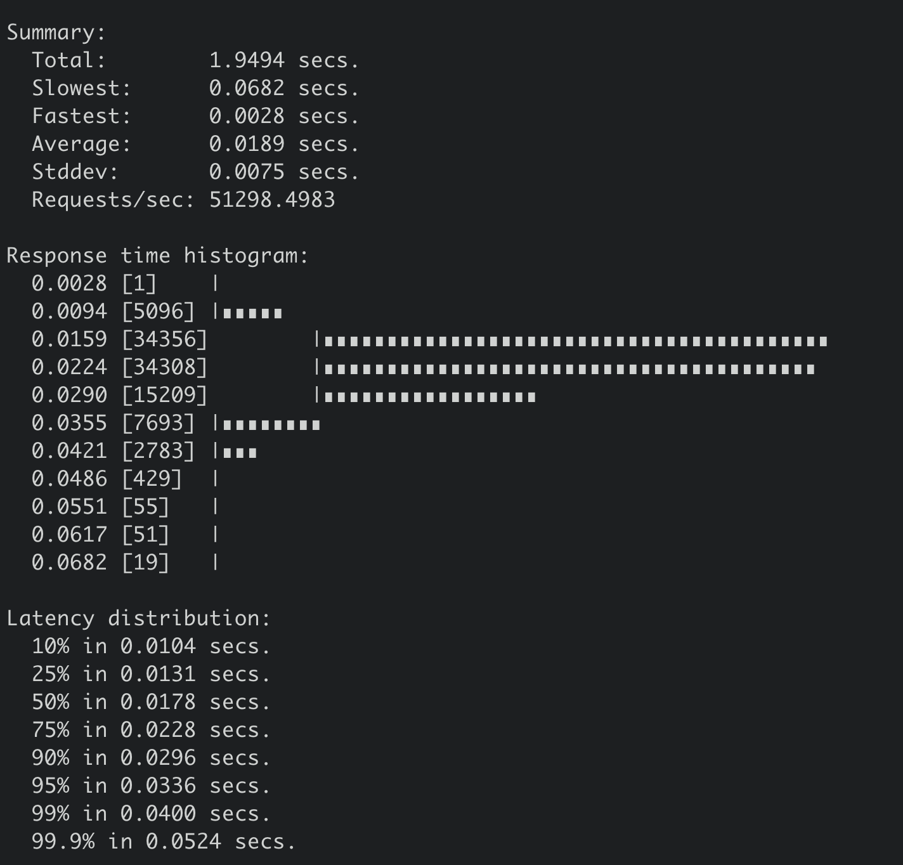
下面是非SSD盘集群，执行同样benchmark命令的压测结果，写QPS 35255，平均延时279ms。
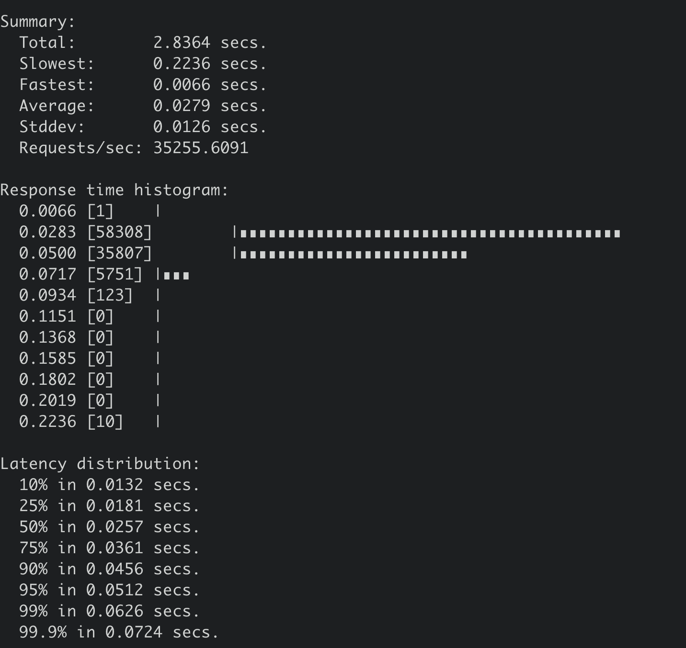
快照参数优化
在Raft模块中，正常情况下，Leader可快速地将我们的key-value写请求同步给其他Follower节点。但是某Follower节点若数据落后太多，Leader内存中的Raft日志已经被compact了，那么Leader只能发送一个快照给Follower节点重建恢复。
在快照较大的时候，发送快照可能会消耗大量的CPU、Memory、网络资源，那么它就会影响我们的读写性能，也就是我们图中的流程七。
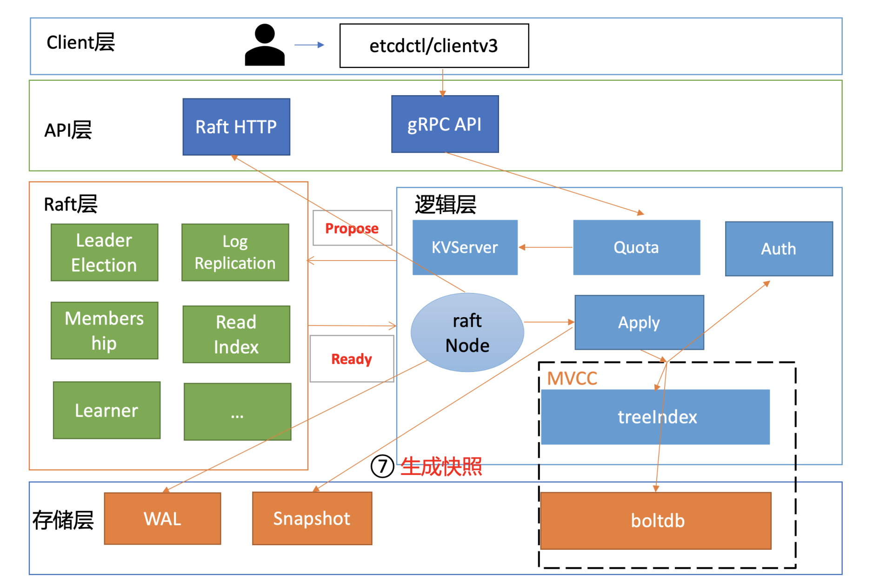
一方面， etcd Raft模块引入了流控机制，来解决日志同步过程中可能出现的大量资源开销、导致集群不稳定的问题。
另一方面，我们可以通过快照参数优化，去降低Follower节点通过Leader快照重建的概率，使其尽量能通过增量的日志同步保持集群的一致性。
etcd提供了一个名为–snapshot-count的参数来控制快照行为。它是指收到多少个写请求后就触发生成一次快照，并对Raft日志条目进行压缩。为了帮助slower Follower赶上Leader进度，etcd在生成快照，压缩日志条目的时候也会至少保留5000条日志条目在内存中。
那snapshot-count参数设置多少合适呢?
snapshot-count值过大它会消耗较多内存，你可以参考15内存篇中Raft日志内存占用分析。过小则的话在某节点数据落后时，如果它请求同步的日志条目Leader已经压缩了，此时我们就不得不将整个db文件发送给落后节点，然后进行快照重建。
快照重建是极其昂贵的操作，对服务质量有较大影响，因此我们需要尽量避免快照重建。etcd 3.2版本之前snapshot-count参数值是1万，比较低，短时间内大量写入就较容易触发慢的Follower节点快照重建流程。etcd 3.2版本后将其默认值调大到10万，老版本升级的时候，你需要注意配置文件是否写死固定的参数值。
大value
当写请求对应的日志条目被集群多数节点确认后，就可以提交到状态机执行了。etcd的raftNode goroutine就可通过Raft模块的输出接口Ready，获取到已提交的日志条目，然后提交到Apply模块的FIFO待执行队列。因为它是串行应用执行命令，任意请求在应用到状态机时阻塞都会导致写性能下降。
当Raft日志条目命令从FIFO队列取出执行后，它会首先通过授权模块校验是否有权限执行对应的写操作，对应图中的流程八。影响其性能因素是RBAC规则数和锁。
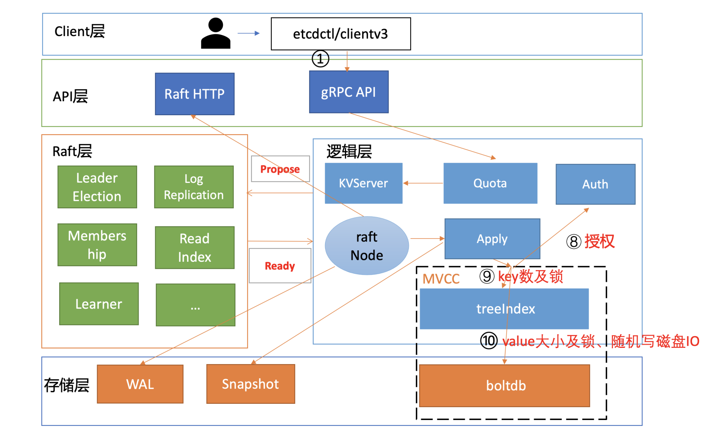
然后通过权限检查后，写事务则会从treeIndex模块中查找key、更新的key版本号等信息，对应图中的流程九，影响其性能因素是key数和锁。
更新完索引后，我们就可以把新版本号作为boltdb key， 把用户key/value、版本号等信息组合成一个value，写入到boltdb，对应图中的流程十，影响其性能因素是大value、锁。
如果你在应用中保存1Mb的value，这会给etcd稳定性带来哪些风险呢？
首先会导致读性能大幅下降、内存突增、网络带宽资源出现瓶颈等，上节课我已和你分享过一个1MB的key-value读性能压测结果，QPS从17万骤降到1100多。
那么写性能具体会下降到多少呢？
通过benchmark执行如下命令写入1MB的数据时候，集群几乎不可用（三节点8核16G，非SSD盘），事务提交P99延时高达4秒，如下图所示。
benchmark --endpoints=addr --conns=100 --clients=1000 \
put --key-size=8 --sequential-keys --total=500 --val-
size=1024000
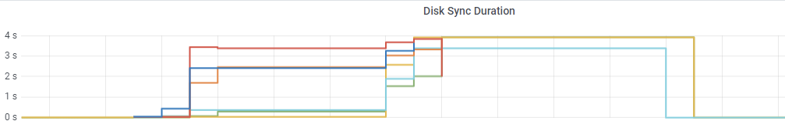
因此只能将写入的key-value大小调整为100KB。执行后得到如下结果，写入QPS 仅为1119/S，平均延时高达324ms。
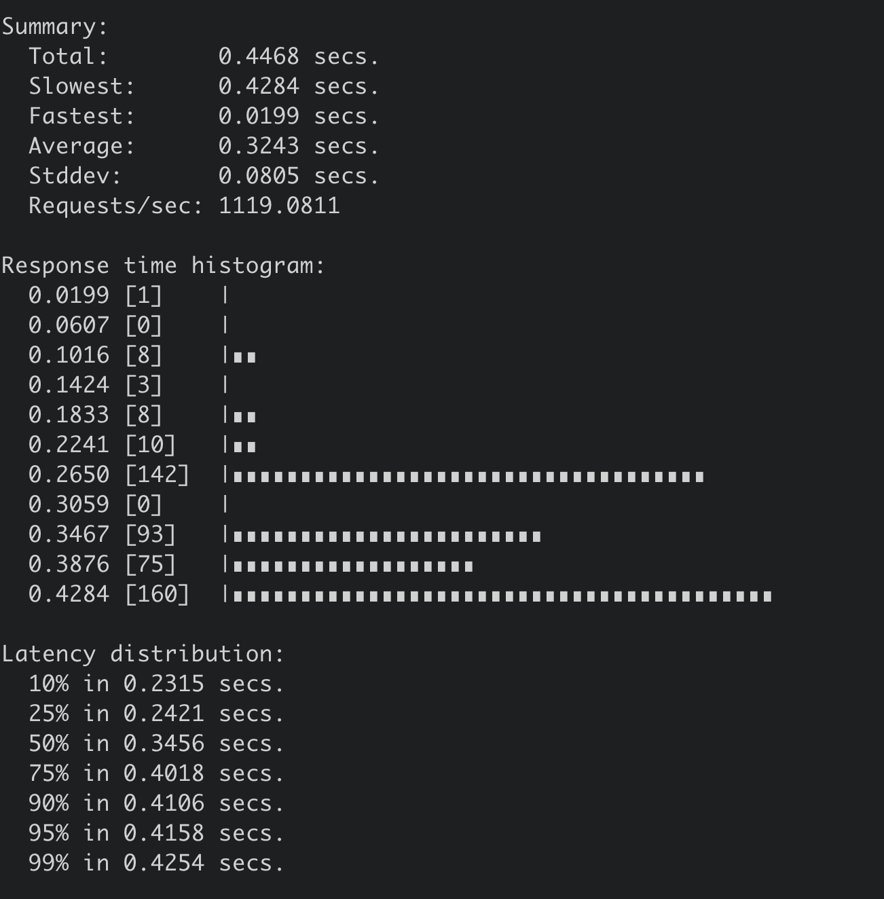
其次etcd底层使用的boltdb存储，它是个基于COW(Copy-on-write)机制实现的嵌入式key-value数据库。较大的value频繁更新，因为boltdb的COW机制，会导致boltdb大小不断膨胀，很容易超过默认db quota值，导致无法写入。
那如何优化呢？
首先，如果业务已经使用了大key，拆分、改造存在一定客观的困难，那我们就从问题的根源之一的写入对症下药，尽量不要频繁更新大key，这样etcd db大小就不会快速膨胀。
你可以从业务场景考虑，判断频繁的更新是否合理，能否做到增量更新。之前遇到一个case， 一个业务定时更新大量key，导致被限速，最后业务通过增量更新解决了问题。
如果写请求降低不了， 就必须进行精简、拆分你的数据结构了。将你需要频繁更新的数据拆分成小key进行更新等，实现将value值控制在合理范围以内，才能让你的集群跑的更稳、更高效。
Kubernetes的Node心跳机制优化就是这块一个非常优秀的实践。早期kubelet会每隔10s上报心跳更新Node资源。但是此资源对象较大，导致db大小不断膨胀，无法支撑更大规模的集群。为了解决这个问题，社区做了数据拆分，将经常变更的数据拆分成非常细粒度的对象，实现了集群稳定性提升，支撑住更大规模的Kubernetes集群。
boltdb锁
了解完大value对集群性能的影响后，我们再看影响流程十的另外一个核心因素boltdb锁。
首先我们回顾下etcd读写性能优化历史，它经历了以下流程：
- 3.0基于Raft log read实现线性读，线性读需要经过磁盘IO，性能较差；
- 3.1基于ReadIndex实现线性读，每个节点只需要向Leader发送ReadIndex请求，不涉及磁盘IO，提升了线性读性能；
- 3.2将访问boltdb的锁从互斥锁优化到读写锁，提升了并发读的性能；
- 3.4实现全并发读，去掉了buffer锁，长尾读几乎不再影响写。
并发读特性的核心原理是创建读事务对象时，它会全量拷贝当前写事务未提交的buffer数据，并发的读写事务不再阻塞在一个buffer资源锁上，实现了全并发读。
最重要的是，写事务也不再因为expensive read request长时间阻塞，有效的降低了写请求的延时，详细测试结果你可以参考并发读特性实现PR，因篇幅关系就不再详细描述。
扩展性能
当然有不少业务场景你即便用最高配的硬件配置，etcd可能还是无法解决你所面临的性能问题。etcd社区也考虑到此问题，提供了一个名为gRPC proxy的组件，帮助你扩展读、扩展watch、扩展Lease性能的机制，如下图所示。
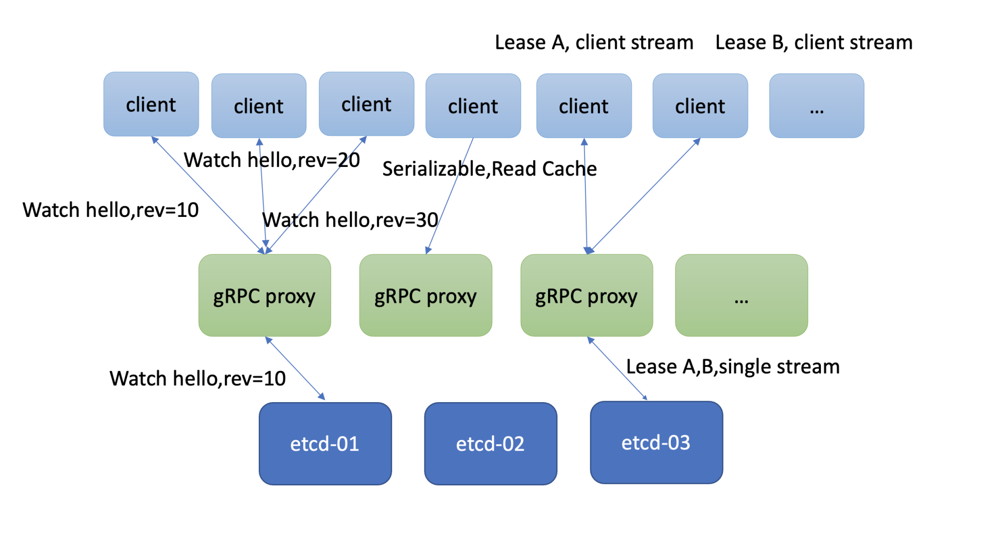
扩展读
如果你的client比较多，etcd集群节点连接数大于2万，或者你想平行扩展串行读的性能，那么gRPC proxy就是良好一个解决方案。它是个无状态节点，为你提供高性能的读缓存的能力。你可以根据业务场景需要水平扩容若干节点，同时通过连接复用，降低服务端连接数、负载。
它也提供了故障探测和自动切换能力，当后端etcd某节点失效后，会自动切换到其他正常节点，业务client可对此无感知。
扩展Watch
大量的watcher会显著增大etcd server的负载，导致读写性能下降。etcd为了解决这个问题，gRPC proxy组件里面提供了watcher合并的能力。如果多个client Watch同key或者范围（如上图三个client Watch同key）时，它会尝试将你的watcher进行合并，降低服务端的watcher数。
然后当它收到etcd变更消息时，会根据每个client实际Watch的版本号，将增量的数据变更版本，分发给你的多个client，实现watch性能扩展及提升。
扩展Lease
我们知道etcd Lease特性，提供了一种客户端活性检测机制。为了确保你的key不被淘汰，client需要定时发送keepalive心跳给server。当Lease非常多时，这就会导致etcd服务端的负载增加。在这种场景下，gRPC proxy提供了keepalive心跳连接合并的机制，来降低服务端负载。
小结
今天我通过从上至下的写请求流程分析，介绍了各个流程中可能存在的瓶颈和优化方法、最佳实践。最后我从分层的角度，为你总结了一幅优化思路全景图，你可以参考一下下面这张图，它将我们这两节课讨论的etcd性能优化、扩展问题分为了以下几类：
- 业务应用层，etcd应用层的最佳实践；
- etcd内核层，etcd参数最佳实践；
- 操作系统层，操作系统优化事项；
- 硬件及网络层，不同的硬件设备对etcd性能有着非常大的影响；
- 扩展性能，基于gRPC proxy扩展读、Watch、Lease的性能。
希望你通过这节课的学习，以后在遇到etcd性能问题时，能分别从请求执行链路和分层的视角去分析、优化瓶颈，让业务和etcd跑得更稳、更快。
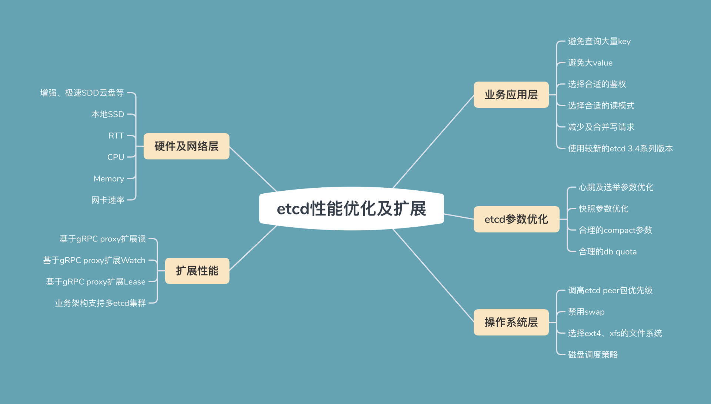
思考题
最后，我还给你留了一个思考题。
watcher较多的情况下，会不会对读写请求性能有影响呢？如果会，是在什么场景呢？gRPC proxy能安全的解决watcher较多场景下的扩展性问题吗？
欢迎分享你的性能优化经历，感谢你阅读，也欢迎你把这篇文章分享给更多的朋友一起阅读。
© 2019 - 2023 Liangliang Lee. Powered by gin and hexo-theme-book.